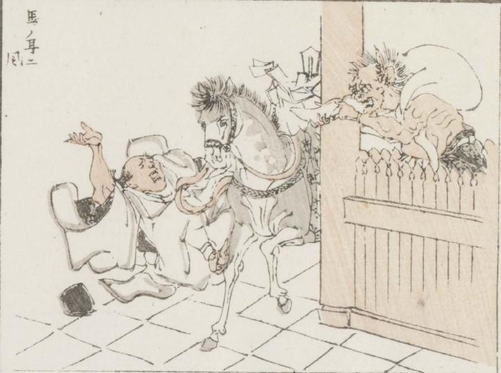

風神；フウジン

門らしきところに立っている風神が、風の入った大きな袋の口を、通りかかった神馬に向けている。神馬に乗っていたと思われる男が、ひっくりかえっている。
著作者：牧墨僊／出典：親書誌：U426_nichibunken_0097：滑稽洒落狂画苑；コッケイシャレキョウガエン／日付：2007／資源識別子：U426_nichibunken_0097_0029_0000
Copyright (c)2010- International Research Center for Japanese Studies, Kyoto, Japan. All rights reserved.